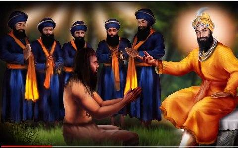
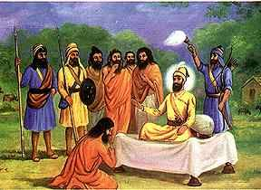
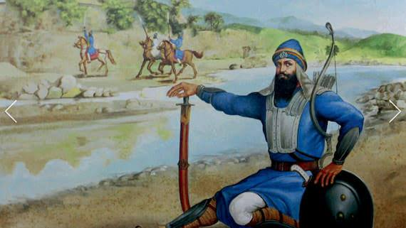
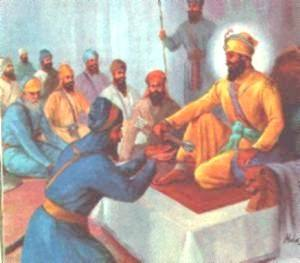
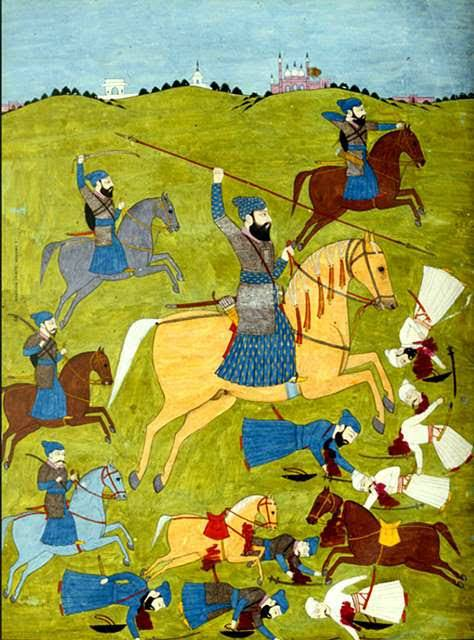
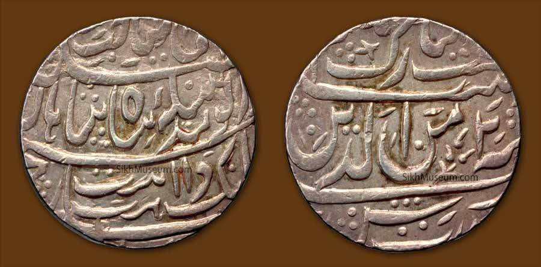

Who Was Baba Banda Singh Bahadur?
Baba Banda Singh Bahadur (1670–1716) was a fearless Sikh general and the first leader to establish Sikh rule in Punjab by defeating the Mughal Empire. He remains one of the most iconic warriors and martyrs in Sikh history.

Early Life-Baba Banda Singh Ji
Born as Lachman Dev in Rajouri (present-day Jammu and Kashmir), he became a Hindu ascetic before transforming into a warrior saint after meeting Guru Gobind Singh Ji at Nanded in 1708. Guru Ji renamed him Banda Singh Bahadur and gave him the mission to fight oppression in Punjab.
Mission from Guru Gobind Singh Ji
Guru Gobind Singh Ji gave Banda Singh five arrows, a Nishan Sahib, a sword, and a Hukamnama, appointing him as the commander of the Khalsa forces to punish the Mughal tyrants, especially Wazir Khan of Sirhind, responsible for the martyrdom of the Sahibzaade.
Military Campaign & Victories
In 1709, Banda Singh led a campaign of justice. The Khalsa army marched through Samana, Shahabad, and eventually Sirhind, defeating Wazir Khan in the Battle of Chappar Chiri in 1710. This was a turning point in Sikh history.
He established Khalsa Raj by abolishing Zamindari system and distributing land to farmers. He introduced the first Sikh administrative system and minted coins in the name of Guru Nanak and Guru Gobind Singh Ji.

Challenges and Final Stand-Baba Banda Singh Ji
The Mughals saw Banda Singh as a threat and launched multiple campaigns against him. Eventually, he was besieged at Gurdas Nangal in 1715 and captured after months of resistance.
Martyrdom-Baba Banda Singh Ji
In June 1716, Banda Singh Bahadur, along with over 700 Sikhs, was martyred in Delhi. He endured horrific torture but never gave up his faith or begged for mercy. His martyrdom inspired future generations of Sikhs to resist tyranny with courage.

Connection to the Ten Sikh Gurus
- Guru Nanak Dev Ji: Embodied the principles of equality and justice
- Guru Angad to Guru Tegh Bahadur Ji: Followed their legacy of service and sacrifice
- Guru Gobind Singh Ji: Personally blessed him and gave him leadership of the Khalsa army
Legacy
Baba Banda Singh Bahadur is remembered as the first Sikh to challenge the Mughal Empire successfully and establish a sovereign Sikh rule. His rule was short-lived, but it sowed the seeds for future Sikh Misls and ultimately the Khalsa Empire under Maharaja Ranjit Singh.
💎 27 October 💎 BIRTH ANNIVERSARY OF BABA BANDA SINGH BAHADUR 💎
(27 October 1670 – 9 June 1716, Delhi)
Banda Singh Bahadur (born Lachman Dev) was a Sikh warrior and a commander of Khalsa army. At age 15 he left home to become a Hindu ascetic, and was given the name ‘’Madho Das’’. He established a monastery at Nanded, on the bank of the river Godavari, where in September 1708 he was visited by, and became a disciple of, Guru Gobind Singh, who gave him the new name of Banda Bahadur.
He came to Khanda in Sonipat and assembled a fighting force and led the struggle against the Mughal Empire. His first major action was the sacking of the Mughal provincial capital, Samana, in November 1709.After establishing his authority and Khalsa rule in Punjab , Banda Singh Bahadur abolished the zamindari system, and granted property rights to the tillers of the land. Banda Singh was captured by the Mughals and tortured to death in 1715-1716.
EARLY CONQUESTS
- After a meeting with Guru Gobind Singh, he marched towards Khanda and fight the Mughals with the help of the Sikh army in Battle of Sonipat.
▪️- In 1709 he defeated Mughals in the Battle of Samana and captured the Mughal city of Samana.
▪️- Samana minted coins. With this treasury the Sikhs became financially stable. The Sikhs soon took over Mustafabad and Sadhora (near Jagadhri). The Sikhs then captured the Cis-Sutlej areas of Punjab, including Malerkotla and Nahan.
- On 12 May 1710 in the Battle of Chappar Chiri the Sikhs killed Wazir Khan, the Governor of Sirhind and Dewan Suchanand, who were responsible for the martyrdom of the two youngest sons of Guru Gobind Singh. Two days later the Sikhs captured Sirhind. Banda Singh was now in control of territory from the Sutlej to the Yamuna and ordered that ownership of the land be given to the farmers, to let them live in dignity and self-respect.
MILITARY INVASIONS
- Banda Singh Bahadur developed the village of Mukhlisgarh, and made it his capital. He then renamed it to Lohgarh (fortress of steel) where he issued his own mint.The coin described Lohgarh: "Struck in the City of Peace, illustrating the beauty of civic life, and the ornament of the blessed throne".
- He briefly established a state in Punjab for half a year. Banda Singh sent Sikhs to the Uttar Pradesh and Sikhs took over Saharanpur, Jalalabad, Muzaffarnagar and other nearby Muslim majority areas. Sikh historians write about his victories on Muslims and also his impact on establishing the sikh state. Panth Parkash by Gyani Gyan Singh and S. Karam Singh Ji Di Itheyasak Khoj both have described his ransack of Muslim rulers and relieved common people.
REVOLUTIONARY
- Banda Singh Bahadur is known to have halted the Zamindari and Taluqdari system in the time he was active and gave the farmers proprietorship of their own land. It seems that all classes of government officers were addicted to extortion and corruption and the whole system of regulatory and order was subverted.
- Local tradition recalls that the people from the neighborhood of Sadaura came to Banda Singh complaining of the iniquities practices by their landlords. Banda Singh ordered Baj Singh to open fire on them. The people were astonished at the strange reply to their representation and asked him what he meant. He told them that they deserved no better treatment when being thousands in number they still allowed themselves to be cowed down by a handful of Zamindars. He defeated the Sayyids and Shaikhs in the Battle of Sadhaura.
PERSECUTION FROM THR MUGHALS
- The rule of the Sikhs over the entire Punjab east of Lahore obstructed the communication between Delhi and Lahore, the capital of Punjab, and this worried Mughal Emperor Bahadur Shah He gave up his plan to subdue rebels in Rajasthan and marched towards Punjab.
- The entire Imperial force was organized to defeat and kill Banda Singh Bahadur. All the generals were directed to join the Emperor's army. To ensure that there were no Sikh agents in the army camps, an order was issued on 29 August 1710 to all Hindus to shave off their beards.
- Banda Singh was in Uttar Pradesh when the Moghal army under the orders of Munim Khan marched to Sirhind and before the return of Banda Singh, they had already taken Sirhind and the areas around it. The Sikhs therefore moved to Lohgarh for their final battle. The Sikhs defeated the army but reinforcements were called and they laid siege on the fort with 60,000 troops.Gulab Singh dressed himself in the garments of Banda Singh and seated himself in his place.
- Banda Singh left the fort at night and went to a secret place in the hills and Chamba forests. The failure of the army to kill or catch Banda Singh shocked Emperor, Bahadur Shah and On 10 December 1710 he ordered that wherever a Sikh was found, he should be murdered.
- Banda Singh Bahadur wrote Hukamnamas to the Sikhs to reorganise and join him at once. In 1712, the Sikhs gathered near Kiratpur Sahib and defeated Raja Ajmer Chand,who was responsible for organizing all the Hill Rajas against Guru Gobind Singh and instigating battles with him. After Bhim Chand's dead the other Hill Rajas accepted their subordinate status and paid revenues to Banda Singh. While Bahadur Shah's four sons were killing themselves for the throne of the Mughal Emperor, Banda Singh Bahadur recaptured Sadhaura and Lohgarh. Farrukh Siyar, the next Mughal Emperor, appointed Abdus Samad Khan as the governor of Lahore and Zakaria Khan, Abdus Samad Khan's son, the Faujdar of Jammu.
- In 1713 the Sikhs left Lohgarh and Sadhaura and went to the remote hills of Jammu and where they built Dera Baba Banda Singh. During this time Sikhs were being persecuted especially by Mughals in the Gurdaspur region. Banda Singh came out and captured Kalanaur and Batala which rebuked Farrukh Siyar to issue Mughal and Hindu officials and chiefs to proceed with their troops to Lahore to reinforce his army.
SIEGE IN GURDAS NANGAL
- In March 1715, the army under the rule of Abdus Samad Khan, the Mughal governor of Lahore, drove Banda Bahadur and the Sikh forces into the village of Gurdas Nangal, Gurdaspur, Punjab and laid siege to the village. The Sikhs defended the small fort for eight months under conditions of great hardship, but on 7 December 1715 the Mughals broke into the starving garrison and captured Banda Singh and his companions.
EXECUTION
- Banda Singh Bahadur was put into an iron cage and the remaining Sikhs were chained.The Sikhs were brought to Delhi in a procession with the 780 Sikh prisoners, 2,000 Sikh heads hung on spears, and 700 cartloads of heads of slaughtered Sikhs used to terrorise the population.They were put in the Delhi fort and pressured to give up their faith and become Muslims.
- The prisoners remained unmoved. On their firm refusal these non-converters were ordered to be executed. Every day a few were brought out of the fort and murdered in public. This continued for approximately seven days. After three months of confinement, on 9 June 1716, Banda Singh's eyes were gouged out, his limbs were severed, his skin removed, and then he was killed.






Back